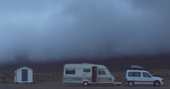

Pawel i Wawel
Pawel und Wawel
Krzysztof Kaczmarek – Austria / Poland 2014
63 min – HD – Polish / Engl./ Icelandic OV Engl. ST
Sc+E+P: Krzysztof Kaczmarek – DoP: Malgorzata Mazur – S: Igor Klaczynski – M: Polish Barefood Carmelite, Nuns from Keflavik, Boring Drug – – Prix Georges de Beauregard, Special Mention FID Marseille 2015
Prix Georges de Beauregard, Special Mention FID Marseille 2015
German Premiere
The starting point and anchor of this trans-genre diary film, road movie, documentary film project, is the film festival initiated by Krzystof Kaczmarek “What`s the difference between Pawel and Wawel,” which more or less unsuccessfully tours the island with Polish classics. Clamped together with a sound arrangement of opera songs, heavy metal, singing Carmelite nuns, beat boxers, the howling dog-man duet of the Museum for Bones, Sticks, and Stones, as well as variations of an obscure Synth-leitmotif, Kaczmarek arranges recordings of the impressions that he gathered like a diary. Focus here is on the scurrile and absurd aspects of the encounters, while also thematized are the constructive relations of landscape and identity and the touristic gaze itself. People, cities, and endless car drives through archaic landscapes meet with atmospheric dream sequences. The issue of the conditions and possibilities for a festival are present: film quotes, references, and reenactments of the screened film program laconically refer to the failure of the individual stations of his project.
friday 9 oct 6.30 pm filmmuseum münchen
Krzysztof Kaczmarek born in 1983 in Blachownia, Poland. Kaczmarek is a filmmaker and visual artist. He graduated from the Academy of Fine Arts in Krakow in 2010. He also studied at the Academy of Fine Arts in Vienna (2008-2010). Lives and works in Vienna and Warsaw.
Films (selection) Pompenzuballen 2010 – Pawel i Wawel 2014